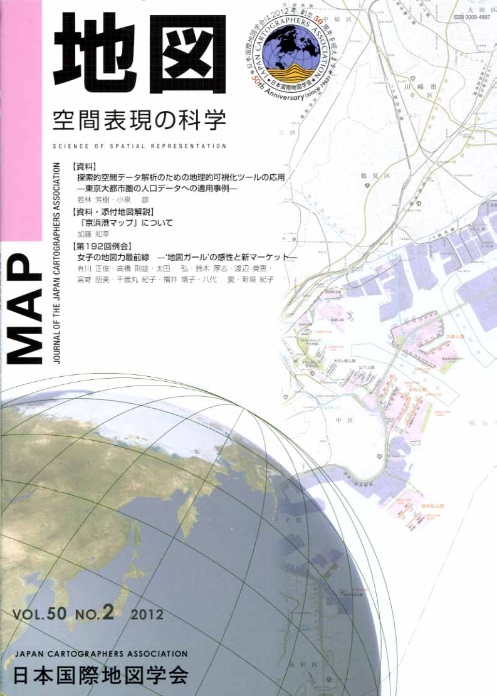
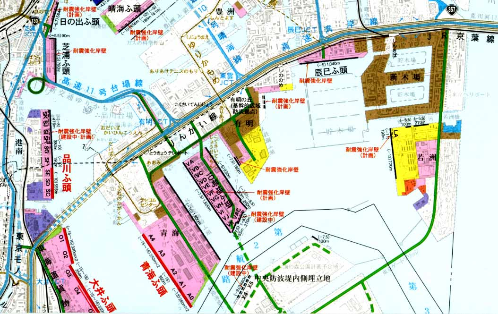
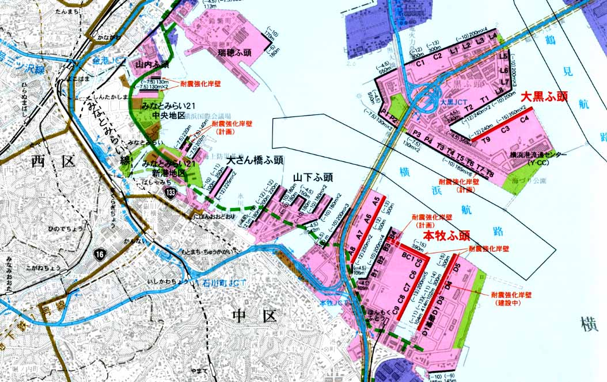

| 最 新 号 | バックナンバー | 添付地図目録 | 投 稿 規 程 |
Vol.50 No.２ （通巻１９８号） ２０１２年
| 【紙碑】 | 名誉会員 鵜飼幸雄先生を偲んで | 西木敏夫 |
| 【資料】 | 探索的空間データ解析のための地理的可視化ツールの応用 −東京大都市圏の人口データへの適用事例− | 若林芳樹・小泉 諒 |
| キーワード：探索的空間データ解析（ESDA）、地理的可視化、地理情報システム（GIS）、空間的思考 | ||
| 【資料・添付地図解説】 | 「京浜港マップ」について | 加藤知幸 |
| キーワード：京浜港、総合港湾、ハブ港、フィーダー港、基幹航路、コンテナ輸送 | ||
| 【第192回例会】 | 女子の地図力最前線 −‘地図ガール’の感性と新マーケット− | 有川正俊・高橋則雄・太田 弘・鈴木厚志・渡辺英恵・宮嵜朋美・千歳丸紀子・福井靖子・八代 愛・新垣紀子 |
| 【特別会員名簿】 | ||
| 【リレーメッセージ：地図・地図学への思い】 | 地図や地図、倭文の苧環繰り返し、夢は地球を駆け巡る。 | 西川 治 |
| 【学会記事】 | ||
| 【添付地図】 | 京浜港マップ | |
|
≪No.50 No.2 表紙≫ |
|
|  |
|
|
|
≪No.50 No.2 添付地図≫ |
|
  本図を許可なく複製・利用することを禁止します。
|